Alpes-Maritimes · association loi 1901
Reconstitution historique
La vie de camp d'une mesnie du 13ème au 15ème siècle
Tentes, cuisine au feu, artisanat, héraldique, armes et échanges avec le public. Une animation visuelle, familiale et facile à intégrer à une fête communale, un site patrimonial ou une journée pédagogique.
- Camp
- installé et animé
- Public
- familles et scolaires
- Format
- modulable

Notre proposition
Voir, toucher, comprendre
Le camp n’est pas un simple décor. Il est habité : on y cuisine, on y travaille, on y explique les objets, les gestes et les usages. Le public observe, questionne et participe.
Animations
Des modules courts, lisibles, interconnectés
Chaque animation peut être proposée seule ou intégrée à un campement complet.
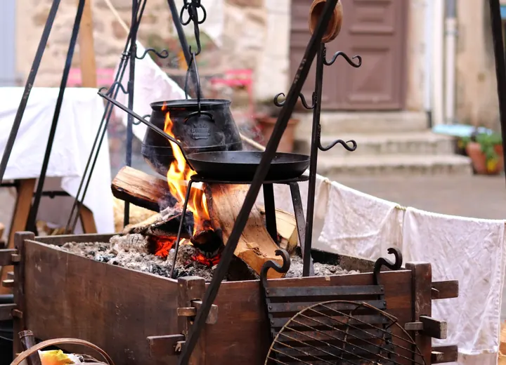
Cuisine au feu
Feu, ustensiles, recettes, gestes quotidiens et arts de la table.
Autour du foyer, le public découvre comment on préparait et partageait les repas au Moyen Âge. Les explications portent sur l’allumage et l’entretien du feu, les ustensiles, les modes de cuisson, les ingrédients disponibles et l’organisation quotidienne du camp.
La présentation permet aussi d’aborder les différences sociales, la conservation des aliments et les arts de la table. Les échanges s’adaptent à l’âge du public et aux objets effectivement présentés le jour de l’animation.
Points abordés
- Foyer, chaudrons et ustensiles
- Recettes et ingrédients historiques
- Gestes quotidiens et service de table
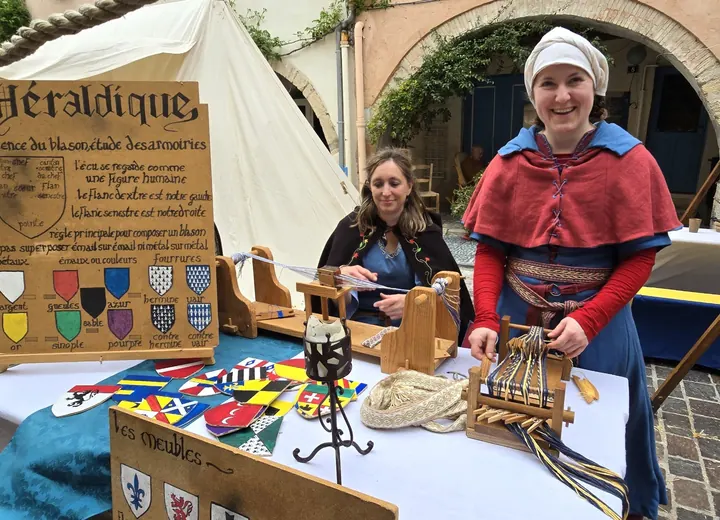
Héraldique
Couleurs, meubles, blasons et atelier très visuel pour le public.
L’héraldique est présentée comme un langage visuel construit pour identifier une personne, une famille ou une communauté. Le public apprend à reconnaître les couleurs, les partitions et les figures qui composent un blason.
Selon le contexte, l’animation peut prendre la forme d’une démonstration, d’un échange autour des bannières ou d’un petit exercice de composition. Elle fonctionne particulièrement bien avec les enfants et les groupes scolaires.
Points abordés
- Vocabulaire et règles de composition
- Lecture de blasons et de bannières
- Création guidée d’armoiries
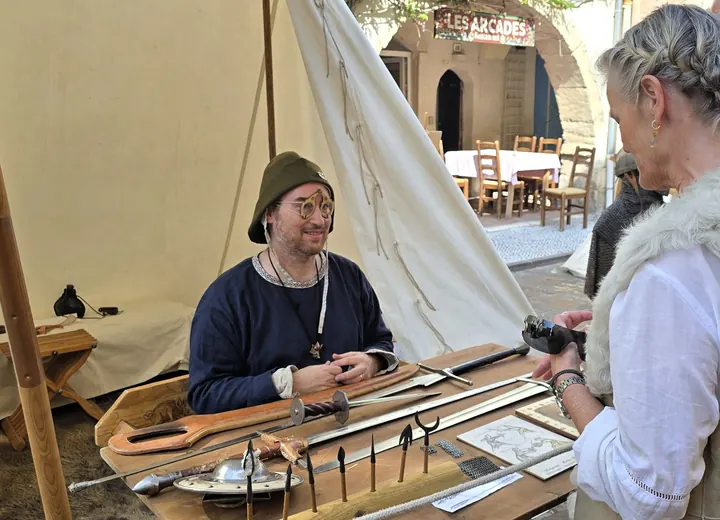
Armes et armures
Présentation encadrée du matériel, de son usage et de son évolution.
Cette présentation replace les armes et les protections dans leur contexte historique. Formes, matériaux, poids, entretien et évolution sont expliqués à partir de reproductions manipulées par les membres de l’association.
L’objectif n’est pas le spectacle de combat, mais la compréhension du matériel et des gestes. La démonstration reste encadrée et adaptée à l’espace disponible ainsi qu’au public présent.
Points abordés
- Équipement du combattant
- Fabrication, entretien et évolution
- Démonstrations commentées et sécurisées
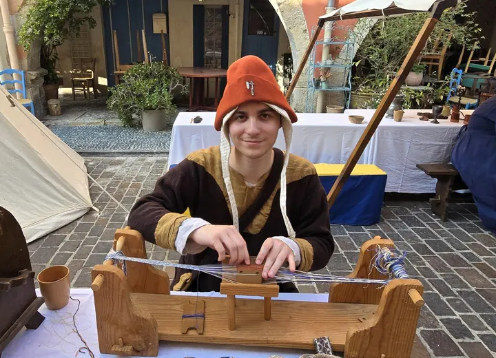
Textile et tissage
Une animation calme, pédagogique et très adaptée aux familles.
De la fibre au vêtement, cette animation montre les nombreuses étapes nécessaires avant de pouvoir se vêtir. Le public observe les matières, les outils et les gestes liés au filage, au tissage et aux finitions.
Le module invite naturellement aux questions et à l’observation rapprochée. Il peut compléter une présentation du costume, des couleurs ou de la place du travail textile dans la vie quotidienne.
Points abordés
- Fibres, fils et teintures
- Outils et techniques de tissage
- Vêtements et usages selon les époques
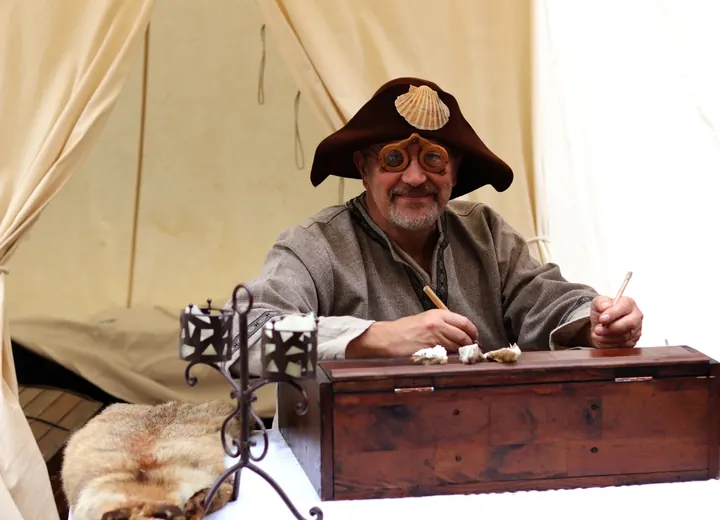
Écriture et pigments
Calligraphie, supports, couleurs et petits objets de camp.
Le public découvre les supports de l’écrit, les outils du scribe et la préparation des couleurs. La démonstration permet de comprendre la lenteur du geste, le coût des matériaux et la valeur accordée aux documents.
Des exemples de lettres, de décors et de pigments rendent le sujet concret. Le contenu peut être orienté vers la calligraphie, l’enluminure ou les usages de l’écrit selon le lieu et le temps disponible.
Points abordés
- Plumes, encres et supports
- Fabrication et usage des pigments
- Calligraphie et décor des manuscrits
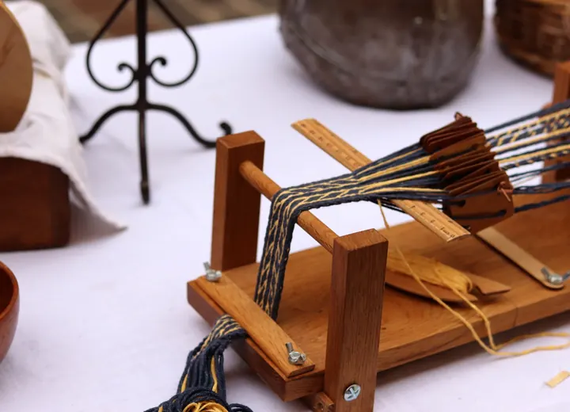
Vie de camp
Tentes, mobilier, tables, costumes et interactions continues.
La vie de camp relie tous les autres modules. Tentes, mobilier, vêtements, repas et activités composent un espace habité dans lequel le public peut circuler et échanger avec les membres de la mesnie.
Plutôt qu’un décor figé, le camp évolue au fil de la journée : préparation des repas, entretien du matériel, artisanat et présentations ponctuelles. Cette présence continue crée un point d’attraction visible dans l’événement.
Points abordés
- Installation et organisation du camp
- Mobilier, costumes et objets quotidiens
- Échanges continus avec les visiteurs
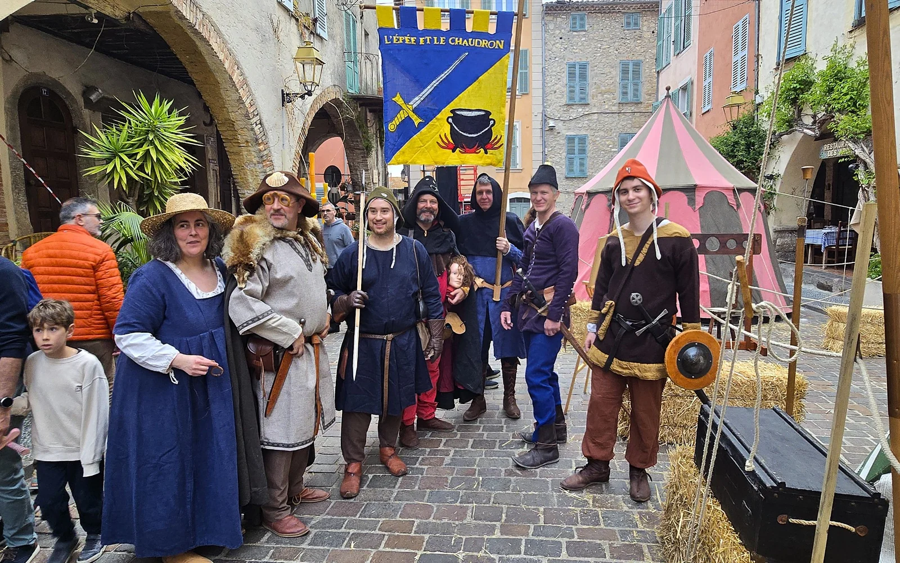
Bourreau
Justice médiévale, métier du bourreau, croyances et idées reçues.
À travers le personnage du bourreau, cette animation aborde la justice au Moyen Âge, ses acteurs et les peines prononcées. Le public découvre un métier à part, entouré de nombreuses croyances et souvent très différent de l’image transmise par les films.
La présentation privilégie l’histoire, les objets et les échanges avec le public, sans mise en scène complaisante. Le discours est adapté à l’âge des visiteurs et au cadre de l’événement.
Points abordés
- Justice et peines au Moyen Âge
- Statut et quotidien du bourreau
- Mythes, croyances et réalité historique

Lessive à la cendre
Une démonstration concrète des techniques d’entretien du linge.
Cette animation explique comment les propriétés de la cendre étaient utilisées pour laver le linge. Les différentes étapes sont présentées depuis la préparation de la lessive jusqu’au rinçage, avec les récipients et les gestes associés.
Le sujet permet d’aborder l’hygiène, l’organisation domestique, la consommation d’eau et le travail nécessaire à l’entretien des textiles avant les produits modernes.
Points abordés
- Préparation de la lessive de cendre
- Lavage, rinçage et séchage du linge
- Hygiène et tâches domestiques
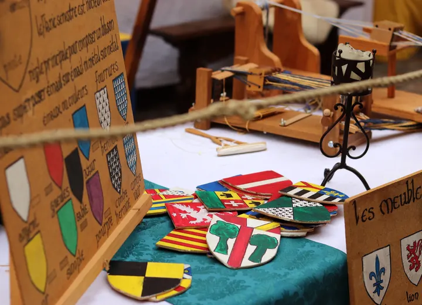
Jeux de société
Découverte de jeux historiques simples, rapides et participatifs.
Des jeux de plateau, de stratégie ou d’adresse permettent aux visiteurs de s’installer quelques minutes et de partager une activité accessible. Les règles sont expliquées par un membre de l’association avant de laisser place à la partie.
Ce module calme et participatif convient particulièrement aux familles. Il peut fonctionner en continu sur le camp ou prendre la forme de petits défis organisés pendant la journée.
Points abordés
- Présentation des jeux et de leurs règles
- Parties guidées pour petits et grands
- Stratégie, hasard et sociabilité

Combats enfants
Une initiation ludique, encadrée et adaptée aux jeunes participants.
Les enfants découvrent quelques principes simples du combat médiéval à travers une activité ludique entièrement encadrée. Les consignes, l’espace et le matériel sont adaptés à leur âge pour privilégier l’écoute, la maîtrise du geste et le plaisir de participer.
L’animation peut être proposée en passages courts afin de permettre à plusieurs groupes de participer au cours de la journée, sous la conduite permanente des membres de l’association.
Points abordés
- Consignes et gestes de base
- Matériel adapté aux enfants
- Activité encadrée en petits groupes
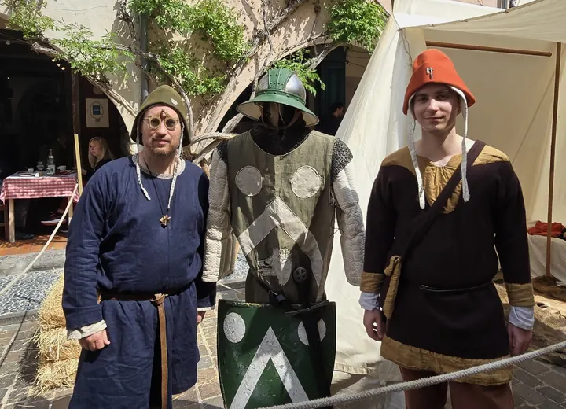
Duel judiciaire
Une démonstration commentée autour du jugement par le combat.
Le duel judiciaire est replacé dans son contexte juridique et social avant une démonstration scénarisée. Le public découvre pourquoi un combat pouvait être autorisé, quelles règles l’encadraient et quelle place il occupait dans la résolution de certains conflits.
La séquence associe explications, personnages et gestes de combat préparés. Elle constitue un temps fort visible, dont la durée et le déroulement peuvent être adaptés au programme de l’événement.
Points abordés
- Contexte juridique et déroulement
- Équipement et règles du duel
- Démonstration scénarisée et commentée
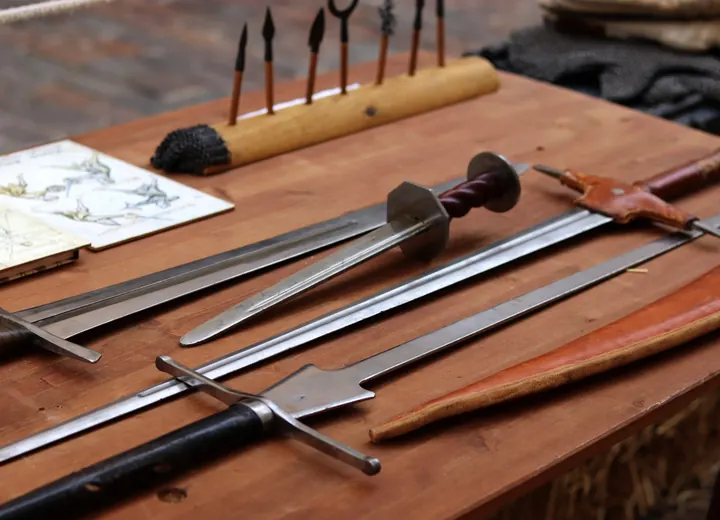
Forge
Le travail du métal, les outils du forgeron et la fabrication des objets.
Cette animation présente le métier du forgeron et les principales étapes nécessaires pour transformer le métal. Le public découvre le rôle du foyer, de l’enclume, du marteau et des différents outils utilisés pour chauffer, façonner et finir une pièce.
La démonstration permet d’évoquer la place essentielle de la forge dans la vie quotidienne : outils agricoles, éléments de construction, objets domestiques et équipement militaire. Son déroulement est adapté au lieu et aux conditions de sécurité de l’événement.
Points abordés
- Foyer, soufflet, enclume et marteaux
- Chauffe et mise en forme du métal
- Objets produits et rôle du forgeron
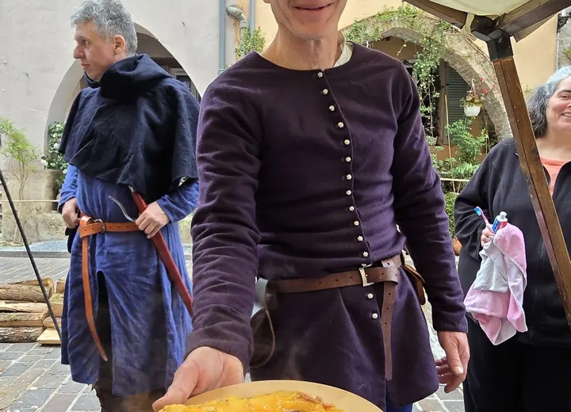
Fruits et légumes
Produits disponibles, saisonnalité et alimentation au Moyen Âge.
Cette animation invite le public à découvrir les fruits et légumes connus et consommés au Moyen Âge. Elle permet de distinguer les produits locaux, les aliments réservés à certaines régions ou catégories sociales, et ceux qui n’arriveront en Europe que plus tard.
La présentation aborde également la saisonnalité, les modes de conservation et la place des végétaux dans les repas. Elle offre un point de comparaison concret avec notre alimentation actuelle et se prête particulièrement bien aux échanges avec les familles et les scolaires.
Points abordés
- Fruits et légumes présents au Moyen Âge
- Saisons, cultures et conservation
- Idées reçues sur l’alimentation médiévale
Pour les mairies et organisateurs
Une animation attractive, sans complexifier votre programme.
La proposition est facile à annoncer : un camp identifiable, des ateliers continus et des temps forts à placer dans votre déroulé.
- Format court, journée, week-end ou intervention sur mesure.
- Adaptation au lieu, au public et au thème de l’événement.
- Contenus accessibles aux familles, scolaires et publics patrimoniaux.
- Campement, ateliers, démonstrations et saynètes combinables.
Format court
Atelier ciblé ou intervention pédagogique pour une école, une médiathèque, un centre culturel ou une animation ponctuelle.
Journée complète
Campement animé, ateliers en continu, démonstrations, échanges avec le public et scènes courtes.
Week-end
Vie de camp complète, répétition des ateliers et rythme évolutif pour maintenir l’intérêt des visiteurs.

Bleu royal · jaune or · feu
Une identité directement issue de la bannière.
Photos récentes
Notre galerie de photos
Photos locales, filtrables, avec ouverture plein écran.
L’association
Une mesnie de passionnés, pas un décor figé
L’Épée et le Chaudron réunit des passionnés de reconstitution et de médiation historique. La force de l’association tient à la variété des objets, des personnages et des savoir-faire présentés au public.
On parle autant de vie quotidienne que d’armes, autant des couleurs d’un blason que de cuisine, de textile ou d’écriture.
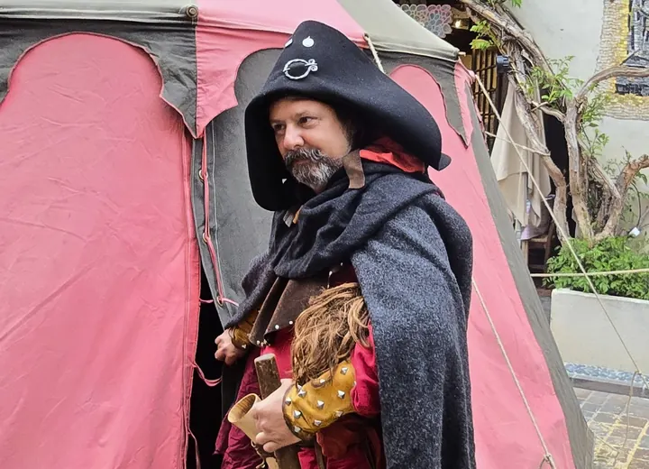
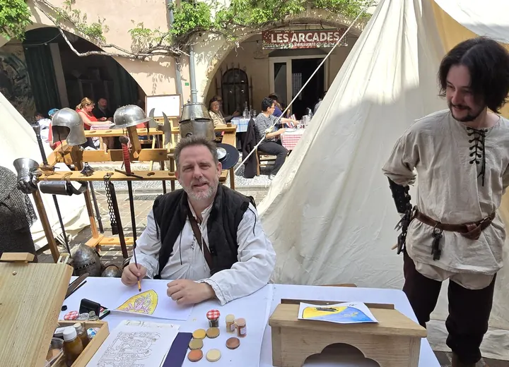
Contact
Parlez nous de votre projet, lieu et contraintes.
Indiquez la date, la commune, le type de public attendu, la surface disponible et le format souhaité. L’association pourra proposer une intervention adaptée.